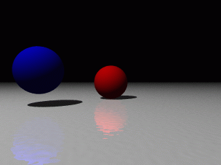

29 octobre 2001
La réalisation est vraiment d’une délicatesse magnifique, avec une
photographie très travaillée, tant dans la composition que dans les
couleurs, parfois saturées, sur les robes de Maggie ou sur les visages,
couleurs qui reflètent le monde intérieur des personnages.
D’ailleurs ces robes faites d’étoffes variées mais toujours selon la
même coupe incitent le spectateur à les considérer comme la palette
d’émotions qui habite un être qui reste essentiellement le même.
Cette forme superbe mais toujours liée au fond se retrouve également
dans la musique (ah… « Siempre contestas ‘quizas’»), et dans les scènes
au ralenti qui marquent les étapes dans la relation entre les deux
personnages.
25 septembre 2000
Updated on March 26, 2005
What is gSoko?
gSoko is a gtk+ clone of the famous Sokoban game.
The goal of the game is to push all the boxes on the squares with a red pattern.
15 juin 2000
Un grand classique…
Le manifeste du véritable programmeur
Il était une fois, au bon vieux temps (durant ce qu’on appelle l’âge d’or de
l’informatique)… il était facile de distinguer les HOMMES des JEUNOTS (la
tradition les désigne aussi respectivement par les dénominations de VÉRITABLES
et de VISAGES PÂLES). À cette époque, les VÉRITABLES étaient ceux qui
connaissaient la programmation des ordinateurs, et les VISAGES PÂLES étaient
ceux qui ne la connaissaient pas. Les VÉRITABLES préféraient des mots comme
“DO 10 I=1,10” ou encore “ABEND”. Ils ne parlaient d’ailleurs qu’en
majuscules. Le reste du monde disait des choses du genre “Les ordinateurs sont
trop compliqués pour moi” ou bien encore “Les ordinateurs ne me disent rien,
ils sont trop impersonnels”. Des recherches récentes ont d’ailleurs montré que
les VÉRITABLES n’ont besoin de rien dire à personne, et qu’en plus ils n’ont
pas peur d’être impersonnels.
28 avril 2000
Si cette formation couvre les notions essentielles de Pov, et permet d’avoir
un aperçu de ce qu’il est possible de faire, le meilleur moyen d’apprendre est
encore la pratique : faites des scènes, simples au départ, puis plus
élaborées, lisez la doc, faites des essais.
28 avril 2000
Variables
#declare nom=valeur;
Si l’on tape la ligne ci-dessus dans un fichier .pov, on pourra ensuite taper
nom là où POV attend un élément du type de valeur (nombre ou vecteur).
Cela permet de paramétrer des objets (longueur du bras d’un robot par
exemple), mais aussi de faire des boucles.
28 avril 2000
Il existe différents types de sources lumineuses, mais aucune de ces sources
n’est visible directement : on ne peut voir que des reflets.
Lumière omnidirectionnelle
light_source {<v> couleur}
La source la plus simple : on spécifie son emplacement, sa couleur, et elle
émet dans toutes les directions.
Lumière conique : spotlight
light_source {<v> couleur spotlight radius r falloff f tightness t
point_at <p>}
Cette source n’est plus omnidirectionnelle : la lumière n’est émise que dans
un cône donné, avec une atténuation sur les bords.
28 avril 2000
Utilisation de textures prédéfinies
De même que colors.inc contient des définitions de couleurs, il existe des
fichiers contenant les définitions de textures entières.
POV fournit ainsi en standard glass.inc, golds.inc, metals.inc, stones1.inc,
stones2.inc, textures.inc et woods.inc. Les textures qui y sont définies sont
accompagnées d’une brève description.
28 avril 2000
Primitives
Les primitives sont les objets de base à partir desquels, par combinaisons, on
va pouvoir obtenir des objets plus complexes.
Les primitives les plus utilisées sont plane, sphere, box, cylinder,
cone, et torus.

plane (plan)
plane {<n>,a}
Un plan est défini par sa normale extérieure n (l’intérieur étant rempli de
matière) et par l’abcisse a de ce plan sur l’axe (0,u) où u est n normalisé.
28 avril 2000
Données de base
Une scène POV se construit dans un espace à trois dimensions X, Y et Z. Elle
est constituée d’objets paramétrés essentiellement à partir de nombres
(float) et de vecteurs (vector).
Un nombre peut s’écrire 2, -3.14, 1.7e3 (=1700), .012 (équivalent à 0.012,
ou encore à 12e-3),…
28 avril 2000

Source
#include "colors.inc"
sphere {<0,0,0>,1 pigment {Red}}
sphere {<-3,.5,-3>,1 pigment {Blue}}
plane {y,-1
pigment {White}
finish {reflection .4}
normal {bozo .02 scale .1}}
light_source {<-6,12,-10>, White}
camera {
location -10*z
look_at 0}